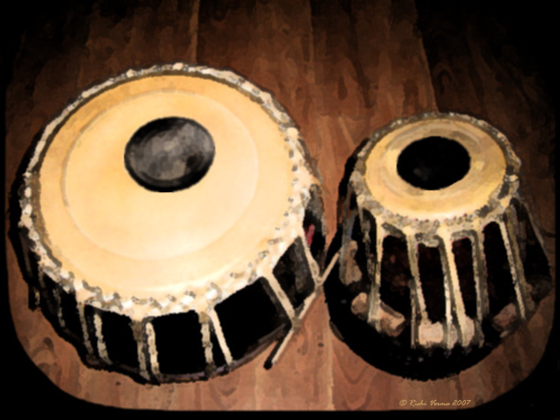

Loading sounds…
Tap a bol, tap a drum, or use your keyboard.
About
The Virtual Tabla simulates the North Indian classical percussion pair: the smaller treble drum (dāyāñ) and the larger bass drum (bāyāñ). Strike a drum or a bol to play, and watch it light up.
Keyboard: S Ge · E Ke · J Na · K Tin · L Tun · O Te · Space play/stop.
Auto-play cycles classical taals — Dādrā, Tīntāl, Jhaptāl, Keherwā — at a tempo you set. Switch on the background song to loop a melodic accompaniment underneath.
Originally built in 2007 in Adobe Flash and featured in several online publications. The archived Flash version is still here.